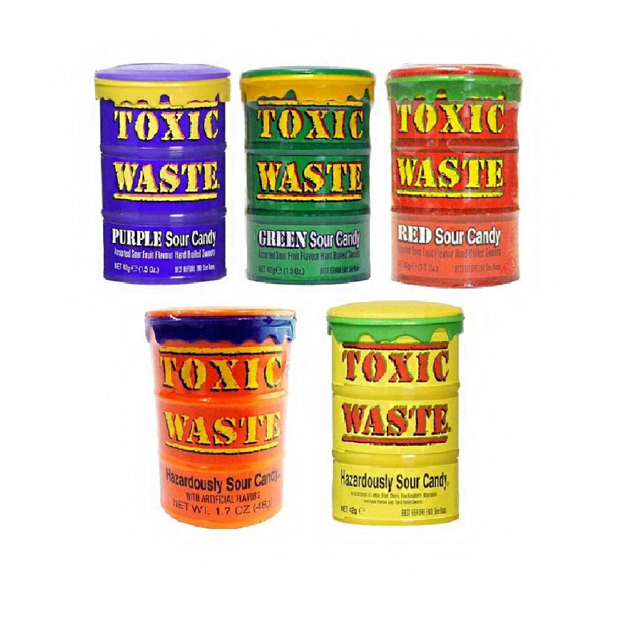

С 2006 года они завоёвывают популярность сначала в США. Затем Англии, Ирландии, Канаде, Австралии
и выходят на рынок в Азиатских странах. Супер леденцы, с лучшим дизайном для подобной продукции.
Узнаваемая во всем мир баночка «Токсичных отходов» стала визитной карточкой самых кислых конфет в мире.
Их узнают во всем мире. Они, это что-то особенное. Они это самые кислые леденцы в мире Toxic Waste.
Развернув обёртку вы увидите цветной, с первого взгляда совершенно обычный леденец. Но только стоит положить его на язык, и сразу почувствуете запредельную киcлость Toxic Waste. Ощущение повышенной кислости накроет сильной волной. Язык инстинктивно станет шершавым, а лицо изменится до неузнаваемости. Для неподготовленного человека очень серьезное испытание, продержаться хотя бы полминуты с самой кислой конфетой во рту.
После успеха первых «токсичных баночек» леденцов, американские кондитеры решили разнообразить вкусовую гамму самых кислых конфет. Поэкспериментировав у них получились ещё четыре баночки –
| Toxic Waste Yellow | Toxic Waste Green | Toxic Waste Purple | Toxic Waste Red | Toxic Waste Fusion |
| яблоко черешня арбуз лимон малина |
зеленая груша зеленое яблоко киви дыня лайм |
черная смородина вишня черника ежевика виноград |
Клюква красная груша клубника виноград малина |
Виноград/Клубника Апельсин/Яблоко Малина/Лимон Банан/Черника Ананас/Маракуйя |
Приятной новостью стало то, что вопреки своему токсичному названию, компания производитель конфет Toxic Waste поддерживает защиту окружающей среды, занимается благотворительностью и участвует во все различных экологических проектах. Справедливости ради стоит отметить, что это популярный тренд среди и других пищевых американских компаний. Например, таких компаний как Wonka, производящих такие конфеты как "Wonka Nerds", "Runts", "Bottle Caps", компании Kellogg's с сухими завтраками и популярнейшими пирожками сэндвичами Pop Tarts, Lay's производящими популярнейшие чипсы, Hershey's, Mike and Ike, Jelly belly и многими, многими другими.
Самые кислые конфеты Toxic Waste надёжно завоевали своё первенство в своей нише. Они являются ярчайшими примерами в своём роде. Предлагаем вашему вниманию так же азиатские самые кислые конфеты, которые стараются оспорить титул самых кислых конфет в мире, такие как например Tai Kee или Dushike, идущие в бюджетном диапазоне, но непременно имеющим все возможности сравниться со знаменателем номер один.
Ещё совсем недавно самые кислые конфеты в мире Токсик Вейст можно было купить только в пяти-шести странах. Но затем их компания стала развивать сеть продаж на Азию и Европы. К сожалению в нашей стране до сих пор не продаются в обычных магазинах самые кислые конфеты в мире. Но вы можете приобрести их у нас, в нашем интернет магазине зарубежных сладостей Land Of Sweets прямо сейчас! Попробуйте удивительные вкусняшки, заказав их прямо сейчас.